Множественное выравнивание
Введение
Множественное выравнивание последовательностей (Multiple Sequence Alignment, MSA) - фундаментальный метод в биоинформатике, используемых для сравнения трех или более биологических последовательностей. MSA позволяет выявить эволюционные взаимосвязи между последовательностями, определить консервативные участки и функциональные домены, а также предсказать структуру и функцию белков.
MSA используется для:
Выявления консервативных регионов и функциональных доменов - они обычно имеют низковариативную последовательность
Определения эволюционных взаимосвязей - эволюция приводит к изменению последовательностей в определнных участках. По ним можно восстанавливать эволюционные расхождения организмов.
Предсказания структуры и функции белков - если у белка с неизвестной функцией есть участок идентичный участку от другого белка с известной функцией, то можно предположить, что неизвестный белок имеет схожую функцию и локализацию.
Идентификация мотивов и паттернов - в ДНК можно встретить последовательности, которые могут ничего не кодировать, но иметь сторого определённую последовательность. Это может быть место посадки транскрипционного фактора без которого не продолжится определенный метаболический путь.
Очевидное отличие отличие от парного выравнивания - множественное выравнивание учитывает сходство между всеми последовательностями одновременно. Это делает его более информативным, но и более вычислительно сложным.
Готовое выравнивание последовательностей еще по-другому называется профилем.
Напомним себе о алгориттмах используемых для построения таких профилей...
Алгоритмы MSA
Существует несколько подходов к построению множественного выравнивания.
Алгоритмы прогрессивного выравнивания
Один из наиболее широко используемых подходов MSA. Он предполагает постепенное построение выравнивания путем добавления последовательностей по одной за раз.
Шаги:
- Попарное выравнивание всех последовательностей друг с другом, в простейшем случае используя метод глобального выравнивания Нидлмана-Вунша.
- Создание матрицы расстояний на основе результатов парного выравнивания.
- Создание направляющего бинарного дерева, в простейшем варианте - используя метод ближайших соседей (об этом на следующей практике).
- Постепенное выравнивание последовательностей в соответствии с бинарным деревом: начиная с листьев (наиболее близких последовательностей) и направляясь к корню, выравнивавая всё менее похожие последовательности в одно выравнивание.
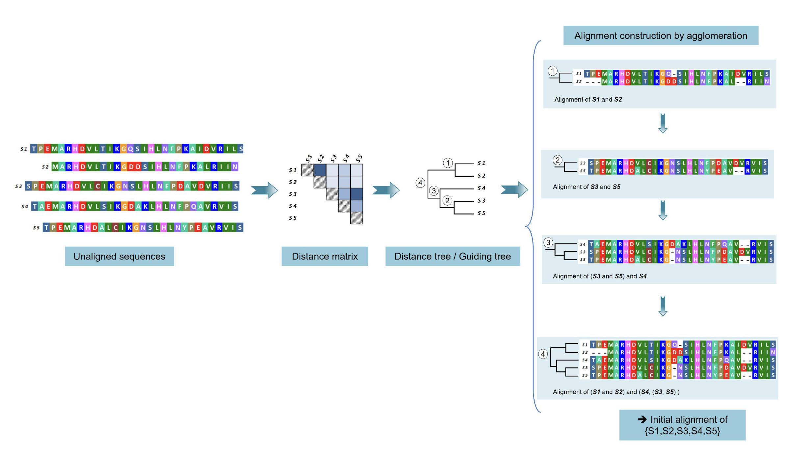
Программы:
- CLustalW - строит направляющее дерево, используя матрицу расстояний, полученную из парных оценок (pairwise scores), а затем выравнивает последовательности шаг за шагом на основе этого дерева (Thompson, Higgins, and Gibson 1994).
Clustal Omega - версия ClustalW, используюящая скрытые марковские модели (HMM) для построения профилей, а также имеющая возможность запуска в многопоточном режиме (Sievers et al. 2011).
T-Coffee (Notredame, Higgins, and Heringa 2000) - улучшает подход к прогрессивному выравниванию за нескольких приёмов:
T-coffee создаёт библиотеки (большой набор) попарных локальных и глобальных выравниваний (в т.ч. с использованием алгоритма ClustalW)
Далее расширяет библиотеку засчёт добавления к каждой паре выравнивания третью последовательность
Таким образом праные выравнвиания уточняются, а каждой паре остатков присваивается вес
Плюсы и минусы
(+) Быстрая и нетребовательная работа с большим количеством последовательностей.
(+) Отлично выравнивает, если последовательности очень похожи.
(-) Ошибки, появившиеся в первых выравниваниях “распространяются” далее, что приводит к потенциально неточным результатам
(-) Поскольку прогрессивные методы являются эвристическими, то не гарантируют схождения к глобальному оптимуму
(-) Старадет биологический смысл выраввнивания
Итеративные алгоритмы уточнения
Итеративные методы начинают с начального выравнивания и затем улучшают его путем многократных циклов оптимизации.
Шаги:
Создать начальное выравнивание (часто используя Алгоритмы прогрессивного выравнивания)
Выберите последовательность или подмножество последовательностей из текущего выравнивания для уточнения. Это может быть сделано различными способами:
- Выбор и удаление одной последовательности за раз;
- Выбор и удаление последовательностей на основе критериев;
- Случайное разбиение выравнивания на два набора последовательностей.
Удалённую(-ые) последовательность(-и) выровнять заново на оставшийся профиль выравнивания или, если было сделано разбиение на два набора, то перевыровнять эти два набора (профиля) последовталеьностей
Оценить новое выравнивание с помощью функции оценки (критерия).
Если новое выравнивание улучшает оценку, то принять его в качестве текущего, а иначе сохранить предыдущее выравнивание.
Повторять шаги 2-5 до тех пор, пока не будет достигнут минимум критерия или максимальное количество итерацй
Пример итеративного уточнения за счёт разбиения на два набора и перевыравнивания двух наборов последовталеьностей (профилей). Здеcь \(S_{TA}\) - score of tested alignment, \(S_{CA}\) - score of current alignment:

Программы:
MUSCLE (Multiple Sequence Comparison by Log-Expectation) - на каждой итерации делит выравнивание на два профиля и перевыравнивает их друг на друга. Использует оценку логарифмического ожидания для построения выравнивания (Edgar 2004).
MAFFT (Multiple Alignment using Fast Fourier Transform) - Использует быстрое преобразование Фурье для построения направляющего дерева, быстрого попарного выравнивания и итеративного уточнения. Подбирает стратуегию выраввнивания взависимости от количества данных: от быстрого, но грубого до медленного, но точного (Katoh et al. 2002).
Плюсы и минусы
(+) Как правило, генерирует более точные выравнивания, чем просто прогрессивные методы.
(+) Уменьшает влияние ранних ошибок выравнивания
(+) Легче справляется с разнородными последовталеьностями
(-) Требовательны к ресурсам при работе с очень большими наборами данных.
(-) Старадет биологический смысл выраввнивания
(-) Плохое начальное выравнивание всё еще может испортить последующее выравнивание
Другие важные алгоритмы
Prank (Löytynoja 2014)
Очень немногие из методов MSA учитывают лежащий в основе выравниваний эволюционный процесс, и prank является заметным исключением.
Однако за счет того, что биологиечская задача превалирует над математической, то выраванивания могут оказаться неэффективными - в том числе по вычислительной мощности.
Kalign (Lassmann and Sonnhammer 2005)
По сравению с остальными алгоритмами, он вычислительно эффективнее и быстрее. Поэтому, если надо создать “прикидочное” выравнивание, то он хорошо для этого подходит.
Использует алгоритм сопоставления строк
Плохо справляется с очень непохожими последовталеьностями
Меньше опций для кастомизации и улучшения выравнивания
Форматы файлов
Форматов, в которых может быть записано выравнивание множество. Их важно узнавать и понимать, потому что некоторые утилиты принимают строго определнные форматы, а на остальные ругаются.
clustal (.aln)
CLUSTAL W 2.1 multiple sequence alignment
seq1 MAKVLLGPVAAVVLPSTGGEQALTV-DGLSTAVTRD
seq2 MA-LLPGGPVLLPPLTGGEKAVTVRNGGLSTAVTRD
seq3 MAVLVGGGPVALPSTGAQAVTVKNGGLSTAVTRDRD
seq4 MKKVLVGPLAALVLPSTGKAVTKNDGLSTAVTRDRD
** * ** * ** * ** * * ****** **«*» - звёздочка означает, что остатки в этом столбце идентичны во всех последовательностях в выравнивании.
«:» - двоеточие означает, что наблюдаются консервативные замены (слабо влияющие на функцию).
«.» - точка означает, что наблюдаются полуконсервативные замены.
Последовательности представлены блоками по 60 остатков. В начале пишется нащвание, в конце номер последнего остатка.
phylip (.phy)
4 42
seq1 MAKVLLGPVA AVVLPSTGGEQ ALTV-DGLST AVTRD
seq2 MA-LLPGGPV LLPPLTGGEKA VTVRNGGLST AVTRD
seq3 MAVLVGGGPV ALPSTGAQAVT VKNGGLSTAV TRDRD
seq4 MKKVLVGPLA ALVLPSTGKAV TKNDGLSTAV TRDRDСверху написаны количество последовательностей и длина выравнивания.
nexus (.nxs)
#NEXUS
BEGIN DATA;
DIMENSIONS NTAX=4 NCHAR=42;
FORMAT DATATYPE=PROTEIN GAP=- MISSING=?;
MATRIX
seq1 MAKVLLGPVAAVVLPSTGGEQALTV-DGLSTAVTRD
seq2 MA-LLPGGPVLLPPLTGGEKAVTVRNGGLSTAVTRD
seq3 MAVLVGGGPVALPSTGAQAVTVKNGGLSTAVTRDRD
seq4 MKKVLVGPLAALVLPSTGKAVTKNDGLSTAVTRDRD
;
END;Самый информативный формат, но и самый “громоздкий”. Внутри сразу написано количество последовательностей с длиной выравнивания, а также какими символами обозначаются пропуски.
fasta (.fas/.fa/.fasta/.fna/.faa)
>seq1
MAKVLLGPVAAVVLPSTGGEQALTV-DGLSTAVTRD
>seq2
MA-LLPGGPVLLPPLTGGEKAVTVRNGGLSTAVTRD
>seq3
MAVLVGGGPVALPSTGAQAVTVKNGGLSTAVTRDRD
>seq4
MKKVLVGPLAALVLPSTGKAVTKNDGLSTAVTRDRDЭтот формат нам уже знаком, поэтому далее им и будем пользоваться.
Практика MSA
Выравнивание нуклеотидных последовательностей
Данные
Скачайте их отсюда: ССЫЛКА
Мы будем использовать файлы из папки nucleotide_msa. Здесь находтся .fasta файлы с последовательностями генов 16S рРНК бактерий.
16S рРНК — один из трёх основных типов рибосомальных РНК, образующих основу рибосом прокариот.
Нам они интересны, потому что они имеют консервативные и вариабельные области (V1-9)
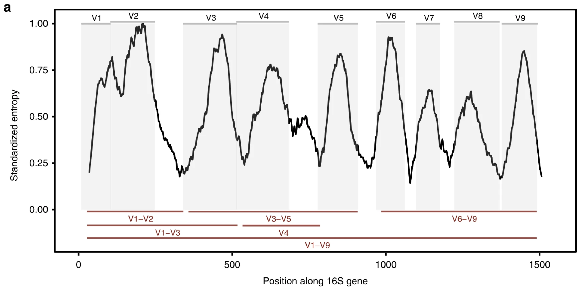
В теории, консервативные области 16S разных организмов должны хорошо выровняться, а вариабельные - нет. Проверим это на практике.
Запускаем программы для выравнивания
В директории есть файлы с около 600 последовательностями (16s_complete.fna) и с 30 (16s_complete_30.fna). Выбирайте тот, с которым справится ваш компьютер. Некоторые алгоритмы имеют стратегии для более быстрого обрабатывания больших данных, но некоторые будут тормозить. Здесь для наглядности мы будем использовать большой файл.
Выбирайте любимый:
mafft --auto 16s_complete.fna > 16s.mafft.fa
# версия muscle 5
muscle -align 16s_complete.fna -output 16s.muscle.fa
# версия muscle 3.8
muscle -in 16s_complete.fna -out 16s.muscle.fa
clustalw -INFILE=16s_complete.fna -OUTPUT=FASTA -OUTFILE=16s.clustalw.fa
kalign -i 16s_complete.fna -o 16s.kalign.fa
t_coffee -infile=16s_complete.fna -outfile=16s.tcoffee.fa
prank -d=16s_complete.fna -o=16s.prank.faMUSCLE - сейчас более доступная для скачивания версия - 5-я. В то же время многие исследователи всё еще используют 3-ю (3.8). У них названия параметров, а некоторых опций, присутстсвовавших в 3-й версии, уже нет в 5-й версии (см [Добавление к выравниванию новых последовательностей]). Разработчики комментируют это так, что 5-я и 3-я версии - это разные программы: 5-я версия не продолжает 3-ю, а переосмысливает её…
MAFFT
Параметр
--autoговорит программе подобрать стратегию (скорость и точноть) автоматически взависимости от количества входных данных.Параметр
--maxiterationпо умолчанию равен 0. Это количесвто итераций улучшения выравнивания. Для улучшения результата рекомендуется использовать значение 1000. Но учтите, что при большом числе данных результат придется подождать.Можно выбрать стратегию самостоятельно. Для подробностей:
man mafft
ClustalW - по-умолчанию даёт результат в формате .clustal, а не .fasta. Поэтому используется параметр
-OUTPUT=FASTA.T-coffee и Prank - их работа может занять очень много времени!
Визуализация
Для визуализации выравнивания и нахождения потенциальных проблем “на глаз” мы будем использовать UGENE - биоинформатическиое ПО с графическм интерфейсом, разработанное в Новосибирске.
Чтобы открыть файл выравнивания нажмём на желтую папку в верхнем левом углу и выберем там соответсвующий файл
После загрузки мы увидим примерно такую картинку:
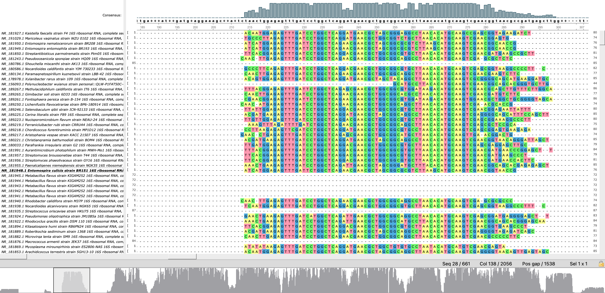
Посередине мы увидим непосредственно выровненные последовательности, где нуклеотиды закрашены каждый своим цветом, а пропуски обозначаются символом тире. Слева находятся имена каждой последовтаельности, которые участвовали в выравнивании.
Сверху столцы и буквы (нуклеотиды) под ней отражают т.н. консенсусную последовательность - последовательность, содержащая в каждой позиции наиболее часто встречающийся остаток (букву). Таким образом, она представляет собой результат множественного выравнивания.
Высота столбцов соответствует частоте встречаемости самого частого в данной позиции остатка. Где-то столбцы довольны малы - пропуски в этой позиции составляют большинство. Самые высокие столбцы соответсвуют позициям с однозначным выравниванием - здесь вертикальная линия остатков будет, как правило, одного цвета.
Снизу можно увидеть общую гистограмму таких частот. Об областях, где серая область достигает максимального значения, содно сказать, что они представлены одинаковыми остатками во всех последовательностях. То есть такие “горки” - это наиболее консервативные регионы. “Просадки серости” же говорят о большом количестве пропусков (почти полностью белые области) или высокой вариабельности (серая область пристутсвет, но меньше в несколько раз, чем в консервативных областях) в этом регионе.
Результат
Видны явно выраженные “горки” консервативных участков и “ямы” V1-V9 участков 16S рРНК. Насколько мы доверяем этому выравнванию? Об этом чуть позже (см. Качество выравнивания).
О частых ошибках
Первый капкан
Запустим выравнивание для некоторых 10 последовтаельностей (файл 16s_complete_10.fna)
mafft --auto 16s_complete_10.fna > 16s.mafft.10.faи визуализируем:
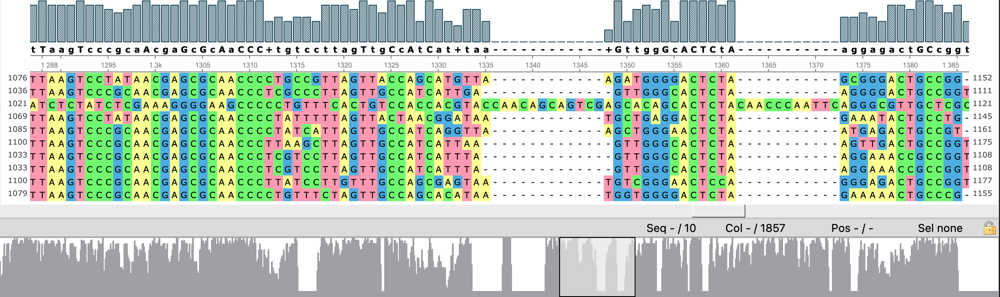
Одна последовательность явно выбивается. Пролема на лицо. 9 последовательностей хорошо согласуются друг с другом, 1 из них - плохо, однако все 10 - это один тот же ген. Как такое возможно?
Проблема проста донельзя: проблемная последовательность обратно-комплементарна. Чтобы вернуть ее “истинный вид” нажмие слева на имя проблемной последовательности, потом нажмите на неё правой кнопкой мыши (ПКМ), а затем в разделе Edit > Replace selected rows with reverse-complement. Теперь осталось перевыровнять последовательности. О том, как это сделать прямо в UGENE будет позже (см. Выравнивание не выходя из UGENE).
Если у вас нет графического интерфеса, то, конечно, вы можете написать и маленький скриптик на питоне, чтобы создать обратно-комплементарную последовательность. Можно даже использовать базовые утилиты терминала:
echo ACCTTGAAA | tr ACGTacgt TGCAtgca | rev
#TTTCAAGGTЕсть и полезные утилиты для работы с последовталеьностями (их надо скачивать отдельно):
seqtk seq -r seq.fasta > reverse_comp_seq.fastaВторой капкан
Запустим выравнивание c помощью ClustalW для некоторых 4 последовательностей (файл 16s_complete_4.fna)
clustalw -INFILE=16s_complete_4.fna -OUTPUT=FASTA -OUTFILE=16s.clustalw.4.faВизуализируем…
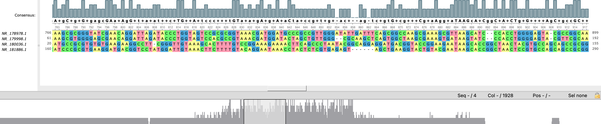
4 последовтаельности были выпотрошены и разбросаны по кускам. Но старым алгоритмам мы доверяем меньше… Попробуем MUSCLE:
muscle -align 16s_complete_4.fna -output 16s.muscle.4.fa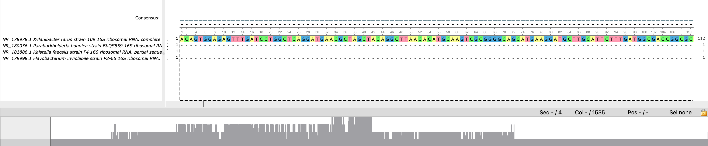
MUSCLE тоже разорвал некоторые последовательности на куски, но не так сильно. Теперь нам ясно в чём проблема. Проблема в частичных вложенных последовательностях, с которыми, при маленьком количестве последовательностей, не все умеют работать.Такие последовательности обычно имеют приписку partial sequence, однако не всегда. Иногда некоторые ленятся уточнить это или считают, что ген был просеквеирован полностью, когда на самом деле лишь часть.
Попробуем MAFFT
mafft --auto 16s_complete_4.fna > 16s.mafft.4.fa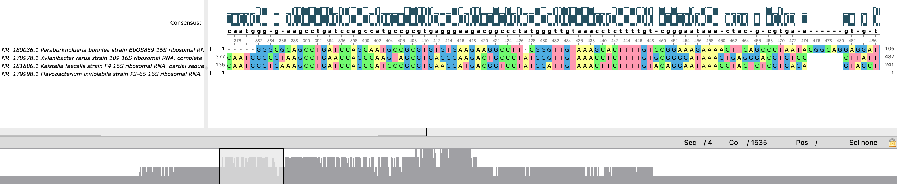
MAFFT справляется с такими случаями лучше всех. Заметка на будущее!
Выравнивание аминокислотных последовательностей
Принципиально процесс выравнивания аминокислотных последовательостей не отличается от нуклеотидных, поэтому сразу же приступим:
Данные
Мы будем использовать последовталеьность миоглобина у приматов (файл Myoglobin_primates.fna).
Миоглобин - гемсвязывающий белок скелетных мышц и мышцы сердца. Миоглобин выполняет функцию кислородного резерва, который расходуется, восполняя временную нехватку кислорода при нагрузках.
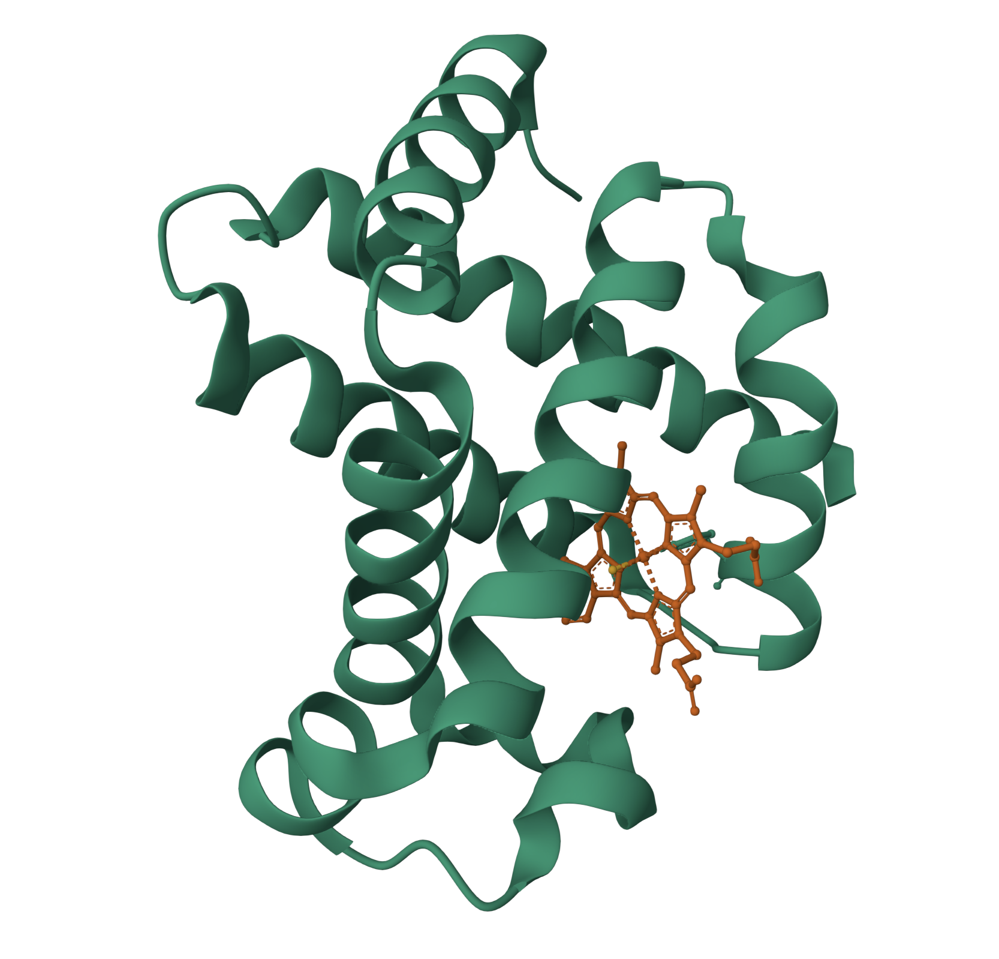
Запускаем программы для выравнивания
Выбирайте любимый:
mafft --auto Myoglobin_primates.fna > Myoglobin_primates.mafft.fa
# версия muscle 5
muscle -align Myoglobin_primates.fna -output Myoglobin_primates.muscle.fa
# версия muscle 3.8
muscle -in Myoglobin_primates.fna -out Myoglobin_primates.muscle.fa
clustalw -INFILE=Myoglobin_primates.fna -OUTPUT=FASTA -OUTFILE=Myoglobin_primates.clustalw.fa
kalign -i Myoglobin_primates.fna -o Myoglobin_primates.kalign.fa
t_coffee -infile=Myoglobin_primates.fna -outfile=Myoglobin_primates.tcoffee.fa
prank -d=Myoglobin_primates.fna -o=Myoglobin_primates.prank.faКомментарии по поводу алгоритмов те же, что и для нуклеотидных последовательностей.
Визуализизация
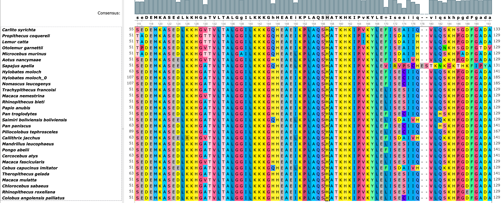
Миоглобин - жизненно необходимый белок и очевидно, что он достаточно конесрвативен, по карйней мере в тех учатсках, которые отвечают за связывание гема и кислорода. Один из таких участков выделен на изображении сверху - гистидин (H) в 94-й позиции (у человека). Чтобы белок мог выполнять свою непосредственную функцию область связывания гема должна быть строго постоянна - любое изменение здесь может повлечь серъезную болезнь или даже смерть. Так замена гистидина в 98-й позиции на тирозин (H -> Y) приводит к миоглобинопатии - снижению связывания кислорода и склонности к образованию высокомолекулярных агрегатов (Hofbauer et al. 2022).
Кстати, а где последовательность человека?
Добавление к выравниванию новых последовательностей
Бывает такое, что вы жади несколько часов, пока выровняется 1000+ последовательностей и тут, получив результат, к вам прибегает коллега и говорит, что (выберите любимый вариант):
они нашли на компьютере забытые последовательности
они только что отсекнировали еще несколько последовательностей
кто-то выпустил статью с гомологичными последовательностями
которые надо тоже включить в выравнивание… И что теперь всё заново переделывать?!
К нам на помощь приходит возможность выравнивать последовательности/профили на готовый профиль. Это легко можно сделать в MUSCLE (только в версии 3.8) и MAFFT.
Сначала, если у нас несколько последовательностей на добавление, нужно их выравнить друг на друга. В нашем случае мы хоти добавить в профиль выравнивания миоглобина приматов последовательности гориллы и человека (файл Myoglobin_human_gorilla.fna)
mafft --auto Myoglobin_human_gorilla.fna > Myoglobin_human_gorilla.mafft.fa
# или
# версия muscle 3.8!
muscle -in Myoglobin_human_gorilla.fna -outMyoglobin_human_gorilla.muscle.faЗатем добавим в созданный ранее профиль новый профиль (горилла+человек)
mafft --add Myoglobin_human_gorilla.mafft.fa Myoglobin_primates.mafft.fa > Myoglobin_full.mafft.fa
# или
# версия muscle 3.8!
muscle -profile -in1 Myoglobin_primates.muscle.fa -in2 Myoglobin_human_gorilla.muscle.fa -out Myoglobin_full.muscle.fa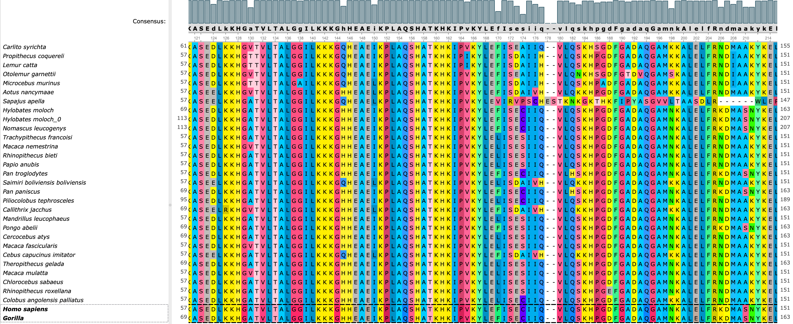
Снизу видно, что добавились наши две последовательности гориллы и человека!
Качество выравнивания
Существуют ли формальные методы оценки качества выравнивания? И да, и нет. Есть метрики и даже алгоритмы, которые подсветят вам проблемыне области, однако последнее слово всё равно за вами. Вы можете опираться на формальные метрики, но в конце концов, набравшись опыта, вы легко и бытсро будете видеть проблемы своими глазами.
- TCS - это веб приложение, которое оценивает ваше выравнивание и выводит цветную версию, отображающую локальную “надежность” выраванивания.
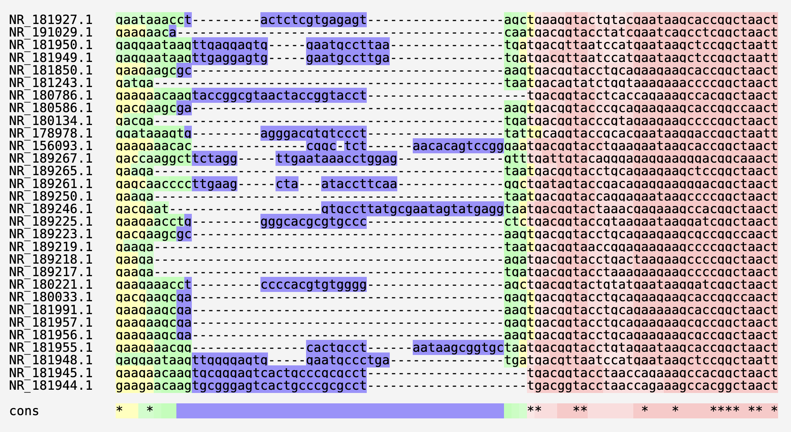
- GUIDANCE2 - Измеряет качество выравнивания, оценивая устойчивость выравнивания к изменениям в направляющем дереве или при включении последовательностей. Выводит баллы доверия для отдельных столбцов и последовательностей.
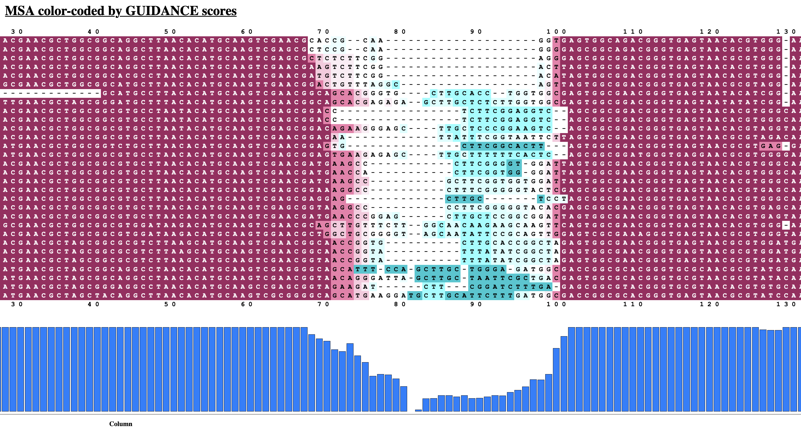
- Там же, на портале GUIDANCE2 можно выбрать и другой алгоритм - HoT (Heads or Tales). Он оценивает качество выравнивания, оценивая чувствительность к включению или исключению терминальных областей.
Кстати, почему-то надежные выравнивания обозначаются красным…
Выравнивание не выходя из UGENE
Биологам, честно говоря, не очень хочется печтать команды в терминале, да и вообще они биологи, а не программисты… Разработчики UGENE сделали удобное ПО, которое включает в себя большой набор утилит, в том числе для построения MSA, которые можно запускать нажав пару кнопок.
В самом верху экрана можно найти вкладку-копку Tools/Инструменты. В выпавшем окне выберите Multiple sequence alignment/Множественное выравнивание. Далее выберите инструмент
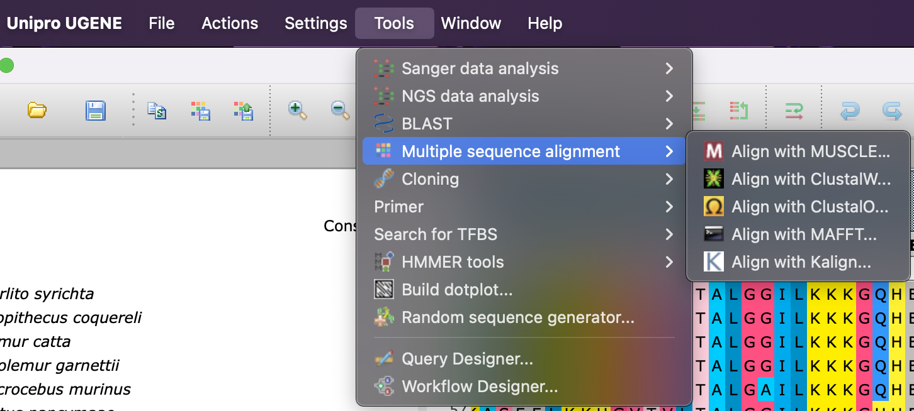
Есть вариант перевыровнять существующее выравнивнивание или добавит к нему последовательность,профиль. Для этого надо нажать ПКМ на область с уже стуществующим выравниванием и там нажать на Align/Выровнять.
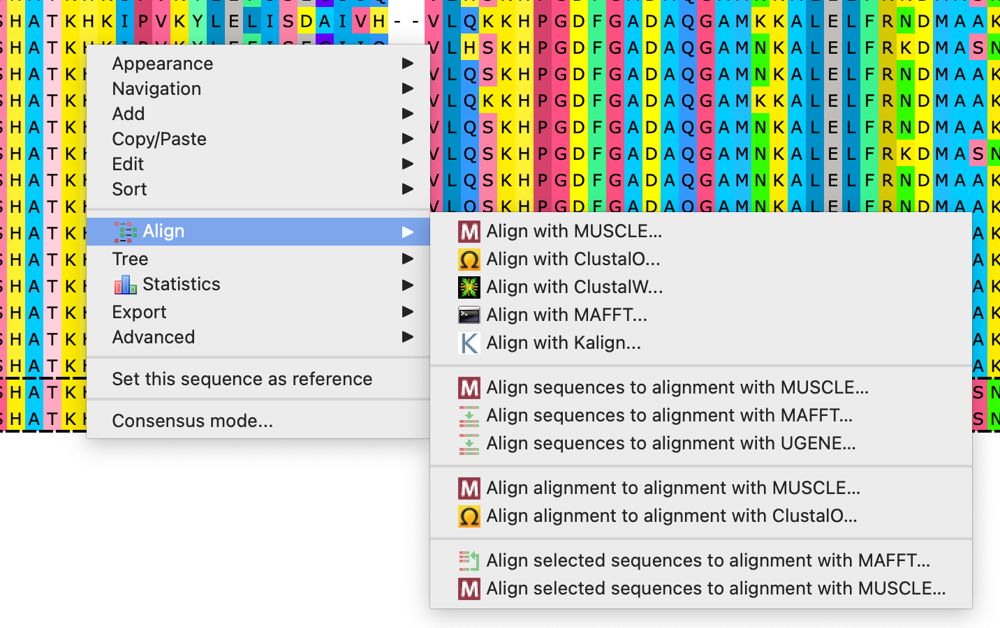
Перекидываем мостик к построению деревьев
Все замены, вставки и делеции несут важную эволюционную информацию для потроения филогенетических деревьев. Тем не менее, иногда итоговое выравнивание содержит последовательности разной длины, и тогда хвосты более длинных последовательностей “висят” или “торчат” среди пустой области. Такие регионы часто не несут никакой эволюционной информации, так как они находятся на концах, где другие последовтаельности не имеют остатков. При этом обращаем внимание(!), что подобные области в середине выравнивания могут быть инсерцией, что является важной биологической информацией!
Поэтому часто исследователи прибегают к обрезке концов (триммингу) профиля выравнивания, чтобы сохранить, только важную информацию для дальнейшего построения филогении. Для этого можно использовать утилиту trimAl:
trimal -in Myoglobin_full.mafft.fa -out Myoglobin_full.mafft.trim.fa -automated1- Чтобы произошла обрезка, нужно укзать хотя бы один параметр для обрезки (
-automated1- автоматически подбирает параметры). Это сделано специально, так как эта утилита также может переводить выравнивания из одного формата в другой. Например, переведем fasta в phylip
trimal -in Myoglobin_full.mafft.fa -out Myoglobin_full.mafft.phy -phylipБольше информации в trimal -h
Можно теперь визуализировать наше обрезанное выравнивание и посмотреть, что осталось.
Домашнее задание
Ссылка на варианты: ССЫЛКА. Внутри каждой папки в файле README.md описано ваше задание.